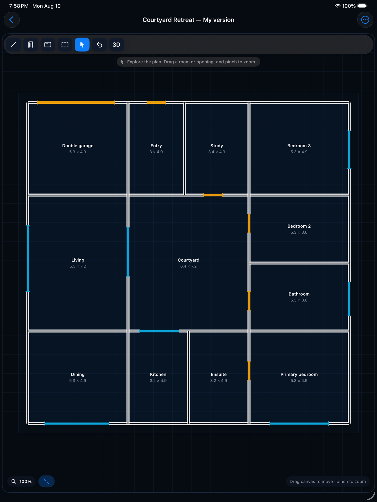
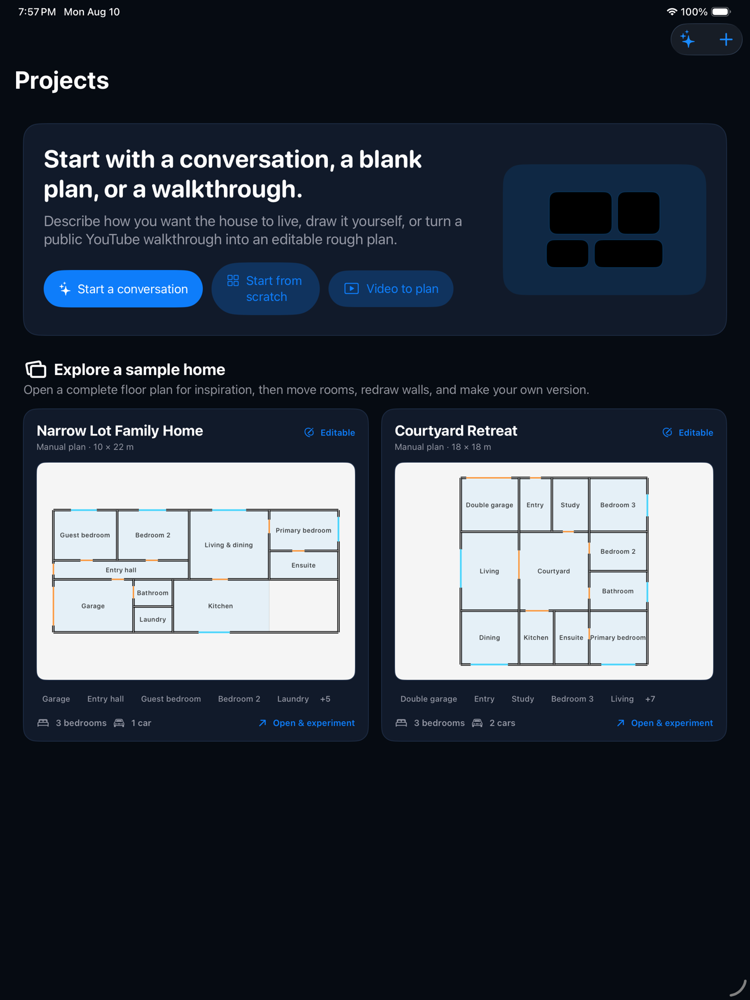
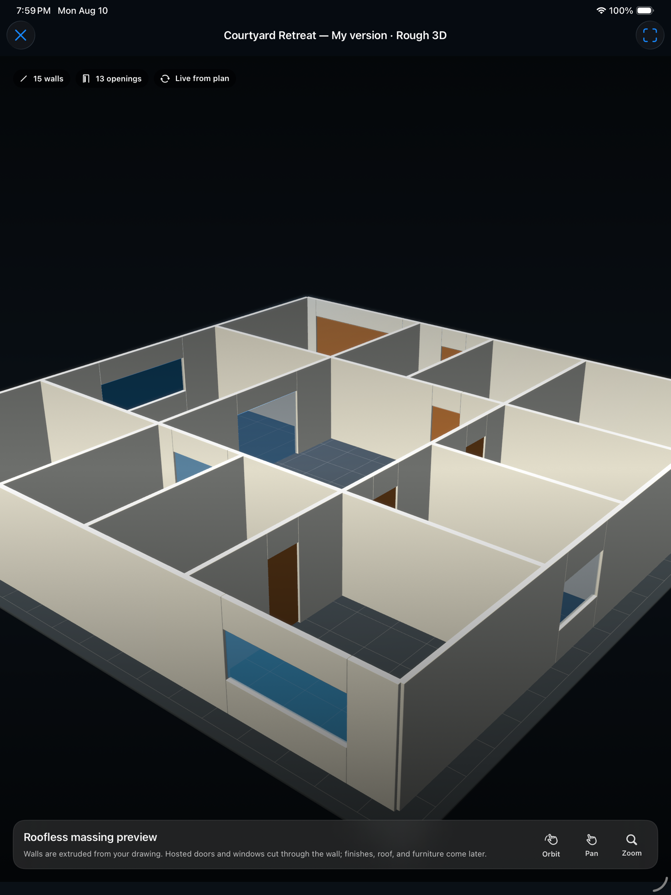

Architecturally
Turns a lot and a wishlist into a home you can walk through. Describe how you want to live, draw a plan by hand, or paste a public YouTube walkthrough, and Architecturally builds an editable floor plan, a real CAD drawing, and a 3D you can stand inside — before you pay a professional to draw it properly. The copilot runs on the iPad itself where the hardware allows, and in the cloud where it doesn't. Native SwiftUI for iPad.

The plan, always editable never locked
Every wall, door, and window on the canvas is a real object you can drag, resize, or redraw — whether you drew it yourself, generated it from a brief, or reconstructed it from a video. Rooms carry live dimensions as you move them, so a change to one wall updates the numbers everywhere else.

Three ways in
Describe the home in your own words, start from a blank canvas, or hand it a walkthrough video — the same editable plan comes out the other side regardless of which door you walk through.

Massing, not a render
Walls extrude live from the 2D drawing into a roofless massing model — orbit, pan, and zoom to judge scale and flow in seconds, without leaving the app or waiting on a render queue.
Requirements survive the exploration
A conversation with Architecturally produces a structured concept brief before any geometry — lot constraints, programme, hard requirements, and assumptions, kept as ProjectBrief data attached to the concept. Styles, 3D views, and exports can change without silently dropping the bedroom count or the setback you specified.
One command, three engines behind it
Ask the drawing for something — "draft a 3-bedroom plan", "widen the hallway", "furnish the living room" — and a router decides who answers: a deterministic interpreter for edits that need no model at all, a language model running on the iPad itself, or the cloud. The choice is yours to fix: Automatic, On device only, or Cloud. It changes latency, cost, and privacy — never what is allowed to reach your drawing.
On-device via MLX
A 4-bit Llama 3.2 3B Instruct runs locally through MLX Swift, on Apple silicon, using the iPad's own GPU. Weights are downloaded once on request, kept out of iCloud backup, and released the moment the app goes to the background — so a model you aren't using isn't holding 2 GB hostage.
Nothing leaves the device
In On device only, the drawing, the brief, and the catalog never touch a network. It works in airplane mode, on a site with no signal, and it costs no AI credits — local inference is free.
Cloud for the rest
Not every iPad can carry a 3B model. Below the memory floor the copilot simply uses Gemini 3.6 Flash through the app's own relay instead — same commands, same panel, no feature held back. A 6 GB iPad gets the full copilot; it just answers from a server.
Escalation, not a dead end
On Automatic, a capable device drafts locally and hands the hard briefs up to the cloud when the local answer falls short. The proposal says which engine wrote it and flags when it was escalated, so you always know what you're reading.
A floor, not a lock
The local model is offered by default only above roughly 8 GB of memory — M-series iPads and Pro iPhones — because a model that gets killed mid-draft is worse than one never offered. The recommendation is stated plainly and can be overridden per device.
Same gate for every engine
Local and cloud answers are intent only — catalog ids, materials, millimetre offsets, layer names. Never document ids or timestamps. The app rebuilds every proposal from live state and validates it again before committing, so a hallucinated identifier cannot reach the drawing, and you still press Apply.
A real drawing underneath the sketch
What looks like a sketch is a proper CAD document: millimetre geometry on named layers, drawn in whichever unit you think in — millimetres, centimetres, metres, or inches. Line, polyline, arc, rectangle, circle, wall, door, window, dimension, and text tools, with hatching, snapping, and undo on every step.
Sheets at an exact scale
Publish to PDF or SVG at a true 1:N drawing scale on A4 through A1, Letter, or Tabloid — with a title block, not a screenshot of the canvas.
DXF in and out
Import a DXF to draft over someone else's survey or plan, and export one to hand your work to an architect's own CAD without retyping a wall.
A furnished house catalog
Nearly 200 built-in assets — seating, beds, kitchen and bathroom fittings, lighting, rugs, doors, windows, roofs, outdoor structures — plus room packages that drop a whole furnished bedroom or kitchen in one tap. Every asset carries both its plan symbol and its 3D shape.
Twenty plans to start from
Apartments, condos, and houses from one to five bedrooms, generated from a room programme rather than downloaded — open one, then revise it in place instead of starting a second drawing beside it. The furniture travels with its room when a plan is redrafted.
Massing, live from the plan
Walls, openings, and furniture extrude straight out of the 2D drawing into a SceneKit model. Orbit, pan, and zoom to judge scale and flow — the scene is a disposable snapshot, so opening the viewer can never alter or re-save your drawing.
Walk it at eye height
Drop into the model at 1.6 m and walk the plan: doors swing and slide on their hinges, stairs carry you between storeys, and walls stop you where real ones would. It's the fastest way to find out that a hallway you drew is too narrow.
Platform
Native iPad app in Swift and SwiftUI, targeting iPadOS 18.
Inference
MLX Swift on-device where the hardware carries it; otherwise a Vercel relay forwards briefs, canvas commands, and video URLs to Google Gemini. Provider keys never ship in the app, and the relay keeps nothing after it answers.
Drawing engine
Millimetre-accurate CAD geometry on named layers, with DXF import and export and scaled PDF/SVG sheet publishing.
Local-first storage
Floor plans and concepts live on-device. AI credit balance syncs through your own private iCloud account via CloudKit — not a server we control.
Video-to-plan
A public YouTube URL is sent to Gemini for inspection; the video itself is never downloaded or stored by Architecturally.
Credits, not a subscription
20 free AI credits on iCloud sign-in. Drawing, editing, saving, 3D previews, and anything the on-device model answers never cost credits.